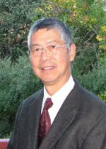
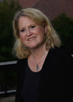
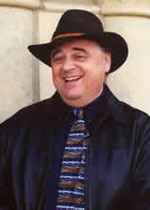
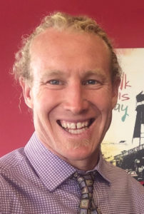

Project Leaders
Research Participants
Acknowledgements
Project Leaders
Gordon H. Chang, Co-Director
Professor of History, Olive H. Palmer Professor in Humanities
Gordon H. Chang’s research focuses on the history of America-East Asia relations and on Asian American history. He is affiliated with the Center for Comparative Studies in Race and Ethnicity, the American Studies Program, International Relations Program, and the Center for East Asian Studies. He is particularly interested in the historical connections between race and ethnicity in America and foreign relations, and explores these interconnections in his teaching and scholarship.
Chang published Fateful Ties: A History of America’s Preoccupation with China (Harvard University Press, 2015) which examines the long history of Sino-American relations. He gives special attention to China in American thought, politics, and culture, from Jamestown to the present. China, for many Americans, through the years, stimulated especially strong sentiments, positive and negative, about the place of China in realizing America’s assumed historical destiny. Chang published Ghosts of Gold Mountain: The Epic Story of the Chinese Who Built the Transcontinental Railroad (Houghton Mifflin Harcourt: 2019) and was the co-editor of The Chinese and the Iron Road: Building the Transcontinental Railroad (Stanford University Press: 2019), a collection of twenty-one essays from the CRRWP.
Shelley Fisher Fishkin, Co-Director
Joseph S. Atha Professor of Humanities, Professor of English, and Director of American Studies, Stanford University
Shelley Fisher Fishkin has taught at Stanford since 2003. She is the author, editor, or co-editor of over forty books, and has published over one hundred articles, essays and reviews, many of which have focused on issues of race and racism in America, and on recovering previously silenced voices from the past. Her books have won two “Outstanding Academic Title” awards from Choice, an award from the the National Journalism Scholarship Society, and “Outstanding Reference Work” awards from Library Journal and the New York Public Library. She holds a Ph.D. in American Studies from Yale, and before coming to Stanford, was chair of the American Studies Department at the University of Texas at Austin.
In June 2019 the American Studies Association created “The Shelley Fisher Fishkin Prize for International Scholarship in Transnational American Studies” in recognition of “Shelley Fisher Fishkin’s leadership in creating a crossroads for international scholarly collaboration and exchange” that “has transformed the field of American Studies in both theory and practice.” She is a Past President of the American Studies Association and co-founded the Journal of Transnational American Studies. For further info please visit her biography on the English Department website.
Hilton Obenzinger, Associate Director
Lecturer, American Studies and English, Stanford University
Hilton Obenzinger has been a lecturer at Stanford University in American Studies and English and Associate Director for Honors and Advanced Writing. He received his doctorate from the Modern Thought and Literature program at Stanford in 1997. A critic, poet, novelist and historian, and the recipient of the American Book Award, Hilton Obenzinger is the author of American Palestine: Melville, Twain, and the Holy Land Mania, Cannibal Eliot and the Lost Histories of San Francisco, New York on Fire, his recent autobiographical novel Busy Dying, and other books, as well as articles in scholarly journals on American Holy Land travel, the history of California, Mark Twain, Herman Melville, cultural pluralism, and American cultural interactions with the Middle East. He has extensive experience producing educational materials and assisted in the development of the Project’s web site content and digital visualizations, along with related writing about the Chinese railroad workers
Roland Hsu, Director of Research
Roland Hsu assisted with archival research and writing on the nineteenth-century history of the Chinese Railroad Workers in North America. Hsu’s publications address migration and ethnic identity formation. His is the author of multiple essays in international scholarly collections, and in policy journals including Le Monde Diplomatique.
Hsu’s most recent book is Migration and Integration. His writing focuses on the history of migration, and on contemporary immigration policy questions, combining humanistic and social science methods and materials to answer what displaces peoples, how do societies respond to migration, and what are the experiences of resettlement. Currently in the area of U.S.-Chinese history, Hsu is researching U.S. receptions of Chinese intellectuals in exile, who visited China during 1971 to 1981, in the wake of the Henry Kissinger and Richard Nixon covert and public meetings with Mao Zedong and Zhou Enlai. Hsu earned his Ph.D. in Modern European History at the University of Chicago. He holds an M.A. in Art History from the University of Chicago, and a dual B.A. in Art History and also English Literature from the University of California, Berkeley.

Erik Steiner, Digital Media Creative DirectorCo-Director, Spatial History Project, Center for Spatial and Textual Analysis (CESTA), Stanford University
Erik Steiner is the Co-Director of the Spatial History Project at Stanford, an interdisciplinary research cluster at CESTA and a recognized leader in the digital humanities. His research contributions span a wide range fields from historical ecology to urban design, with a focus on digital and visual approaches to representing and analyzing spatio-temporal data. Erik is a former president of the North American Cartographic Information Society (NACIS) and has recently contributed to several major digital projects including: Geographies of the Holocaust, Enchanting the Desert, The Grand Tour Project, and Kindred London.
Barbara Voss, Director of Archaeology
Associate Professor, Department of Anthropology, Stanford University
Dr. Voss is a historical archaeologist who studies the dynamics and outcomes of transnational cultural encounters on the Pacific Rim, including European colonial projects and 19th century migration from China. Her current research projects include the Market Street Chinatown Archaeology Project in San Jose, California (Principal Investigator); the interdisciplinary Chinese Railroad Workers of North America Project (Director of Archaeology); and Research Cooperation on Home Cultures of 19th Century Overseas Chinese (Co-principal Investigator, with Dr. Jinhua (Selia) Tan. She also serves on the Advisory Board for the National Park Service Asian American/Pacific Islander Heritage Theme Study. Dr. Voss’s publications include Archaeologies of Sexuality (Routledge, 2000, co-edited with Robert A. Schmidt), The Archaeology of Ethnogenesis (University of California Press, 2008), The Archaeology of Colonialism: Intimate Encounters and Sexual Effects (Cambridge, 2012, co-edited with Eleanor Casella), and two thematic issues of the journal Historical Archaeology, “The Archaeology of Chinese Immigrant and Chinese American Communities” (2008, co-edited with Bryn Williams) and “The Archaeology of Chinese Railroad Workers in North America” (2015).
Barre Fong
Independent Filmmaker and Graphic Designer
Barre Fong is a fourth generation, native San Franciscan. He was educated at the University of San Francisco and graduated in 1990. He has been married since 1997 and is the father of two teenage children. Professionally, Barre has owned and operated a graphic design, photography and video production studio since 1991. Serving local and international clients, work has included advertising, corporate collateral and communication, commercial photography, video production, website design and website administration. In 2009, Barre began filmmaking in earnest – completing seven short documentary films over the next eight years. The film he directed and produced in 2106, Digging to Chinatown, was recently featured at the Seattle Asian American Film Festival. Barre serves on the Board of Trustees of Lick-Wilmerding High School in San Francisco and formerly served as the President of the Board of Directors at the Chinese Historical Society of America.
Connie Young Yu
Independent Scholar
Connie Young Yu, independent historian, has documented Chinese American history in exhibits, videos, and writings largely based on oral history, artifacts and memorabilia of her family. Her maternal great-grandfather, Lee Wong Sang worked on the Transcontinental Railroad, and her paternal grandfather Young Soong Quong fled the Market Street Chinatown in San Jose when it was burned by arson. Her father, John C. Young, was born and raised in Heinlenville Chinatown, San Jose, which is the subject of Yu’s book “Chinatown, San Jose” published by History/San Jose.
The exhibit at the Chinese Historical Society, “Detained at Liberty’s Door” is about Yu’s maternal grandmother held on Angel Island Immigration Station. Connie was one of the community activists that saved the immigration barracks on Angel Island in 1974. She was a consultant on the archaeological excavations of the Woolen Mills Chinatown (at route 87) and San Jose’s Corporation Yard in Japantown. With Leslie Masunaga, Yu curated the exhibit on the history and archaeology of Chinatown and early Japantown, “On Common Ground”, for the Japanese American Museum of San Jose. She is co-authoring a book with Masunaga, “Digging to Common Ground,” to be published by the California History Center. Yu is a board member emeritus, Chinese Historical Society of America and serves as president of the board of trustees of the Hakone Foundation.
Teri Hessel
Project Researcher
Teri Hessel has a BA in American History from UC Santa Barbara and a MLA from Stanford University. She has a particular interest in literature by 19th century marginalized groups in America as demonstrated by her thesis “Frank J. Webb’s The Garies and Their Friends: A Reconsideration of an Early African American Novel.” Happiest in the stacks with their tantalizing possibility of discovery, Teri investigated primary sources to help recover the 19th-century Chinese experience in America.
Kevin Hsu
Digital Media Researcher
Kevin Fan Hsu contributed to the Project’s digital content, and explores how diverse media can communicate the stories of the Chinese railroad workers and deepen our understanding of social and environmental conditions. Kevin teaches for the program in International Policy Studies and Urban Studies at Stanford University, where he co-founded the Human Cities Initiative. His courses focus on international cooperation and sustainable development, especially in the Asia-Pacific region. Kevin works in Shanghai on urban infrastructure development, and received three degrees from Stanford—in Earth Systems, International Relations, and Civil & Environmental Engineering.
Project Conveners
The project was originally convened by Gordon H. Chang, Shelley Fishkin, and the following individuals:
Evelyn Hu-Dehart, Professor of History and Ethnic Studies, and Director, Center for the Study of Race and Ethnicity in America at Brown University; and Dongfang Shao, Chief of the Asian Division at the U.S. Library of Congress.
Research Participants
Akin, Marjorie
Independent researcher, community activist
Marjorie (Margie) Akin earned her Ph.D. at UC Riverside, and has worked as an archaeologist and as an applied medical anthropologist. Her area of specialization within the field of historic archaeology is numismatics and she is co-author with James Bard of “Numismatic Archaeology of North America: a Field Guide.
Allen, Rebecca
Cultural Resource Director, Environmental Science Associates; Associate Editor, Society for Historical Archaeology
Dr. Rebecca Allen has conducted research at sites occupied by Chinese emigrants and long-term communities in urban San Jose, and in the region of the Sierra Nevada mountains. Allen has participated in the creation of museum exhibits, public lectures, popular publications, interactive interpretive displays, site tours, video documentaries, local newspaper articles, television interviews, and website content. She has also published articles and books with professional societies and academic presses.
Bard, James
Consulting Archaeologist, Cardno ENTRIX
James C. Bard earned his Ph.D. in Anthropology from UC Berkeley with a specialization in the archaeology and ethnology of western North America. In 2009 Bard joined SWCA Environment Consultants in their Portland office where he led the analysis and report for the Sandpoint (Idaho) Archaeological Project. The Sandpoint Archaeological Project recovered over 90 percent of a small Chinese settlement located adjacent to the Northern Pacific Railroad tracks. Bard is actively involved in the study of Northern Pacific Railroad camps with colleagues in Northern Idaho.
Chace, Paul G.
Proprietor, Paul G. Chace & Associates
Paul G. Chace is a cultural resources consultant and an anthropologist specializing in cultural resources management, preservation law, and ethnic relations theory. Elected a Fellow of the American Anthropological Association in 1976, and certified by the Register of Professional Archaeologists since 1977, his career spans over 50 years with extensive practice as an archaeologist, museum curator, historian, ethnologist, and private land-planning consultant. Chase earned his Ph.D. from the University of California, Riverside, and has lectured and published widely on Western prehistory and Chinese American cultural heritage. He is the proprietor and principal archaeologist-historian at Paul G. Chace & Associates, a CRM/land planning consulting firm with offices in Escondido, CA.
Chang, Chiung-huei (張瓊惠)
Professor and Chair, Department of English, National Taiwan Normal University, Taiwan (國立臺灣師範大學英語學系教授暨系主任)
Joan Chiung-huei Chang is Professor in the Department of English at National Taiwan Normal University, Taipei, Taiwan. She received her Ph.D. in Comparative Literature from the University of Oregon, USA. She is author and editor of The Globalization of Comparative Literature: Asian Initiatives. Her research interests include Asian American Literature and the theory of autobiography.
Chen, Shu-ching (陳淑卿)
Dean, College of Liberal Arts; and Professor, Department of Foreign Languages and Literatures, National Chung Hsing University, Taiwan (國立中興大學外國語文學系教授暨文學院院長)
Shu-ching Chen is Dean of the College of Liberal Arts and Professor of the Department of Foreign Languages and Literatures at National Chung Hsing University in Taiwan. She received her PhD in English at Rutgers University, New Brunswick. Her research interests include ethnic literature, Asian Anglo-phone literature, gender studies, Taiwan documentaries, and theories of globalization. Her recent publication includes a monograph on Asian American Literature and globalization: Asian American Literature in an Age of Asian Transnationalism. Her contribution to the Chinese railroad workers project mainly concerns the popular visual representations of Chinese (railroad) workers in 19th Century American newspapers and magazines and their impact on the public imagination about Chinese immigrants.
Chen, Yong
Professor of History, University of California – Irvine
Yong Chen teaches at the University of California, Irvine, where he also served as the University’s Associate Dean of Graduate Studies (1999-2004) and is currently faculty director of the International Student Excellence Program. He is the author of Chop Suey, USA: The Rise of Chinese Food in America, Chinese San Francisco 1850-1943, and The Chinese in San Francisco, co-editor of New Perspectives on American History, and co-curator of “‘Have You Eaten Yet?’: The Chinese Restaurant in America” in New York and Philadelphia.
Chen, Zhongping
Professor of History, University of Victoria
Zhongping Chen is professor of Chinese history and the history of the global Chinese diaspora at the University of Victoria. He has published dozens of journal articles and four books in Chinese and English, including Modern China’s Network Revolution: Chambers of Commerce and Sociopolitical Change in the Early Twentieth Century. His most recent publication is an edited volume of conference proceedings (in Chinese), Toward a Multicultural Global History: Zheng He’s Maritime Voyages (1405−1433) and China’s Relations with the Indian Ocean World. He is currently working on a new book entitled The Rise, Reform and Revolution of the Transpacific Chinese Diaspora, 1878−1918.
Choy, Philip P.
Independent Scholar
The late Philip Choy was a retired architect and renowned historian of Chinese American studies born in San Francisco on December 17, 1926. He grew up in San Francisco Chinatown and he was the fourth in family of five children with three older sisters and a younger brother. He is also the author of San Francisco Chinatown: A Guide to Its History & Architecture (2012), Canton Footprints: Sacramento’s Chinese Legacy (2007), and The Coming Man: 19th Century American Perceptions of the Chinese (1994).
During the Civil Rights era of the 1960s, Choy became president of the Chinese Historical Society of America and in 1969, he teamed up with historian Him Mark Lai to teach the first-ever Chinese American history course at San Francisco State University in 1969. An adjunct professor in San Francisco State’s Asian American Studies Department, he also served on the San Francisco Landmark Advisory Board, on the California State Historical Resources Commission from June 2001 to June 2005, five times as President of the Chinese Historical Society of America (CHSA).
Choy created the first video documentary series on Chinese American history for public broadcasting called the “Gum Saan Haak” (Travelers to Gold Mountain, 1971-1974).
Chung, Sue Fawn
Professor Emerita of History, University of Nevada, Las Vegas
Sue Fawn Chung taught for thirty-nine years at the University of Nevada, Las Vegas and became professor emerita in 2014. Born and raised in Los Angeles, she has a long-standing interest in Chinese American history and wrote her UCLA senior honors thesis on the Chinese American Citizens Alliance. She received her master’s from Harvard and her doctorate from the University of California, Berkeley. She has worked with community leaders in recognizing the efforts of Chinese railroad workers in the dedication of commemorative plaques in places such as Cape Horn near Colfax, California, and Sparks, Nevada. She is the author of two recent books, In Pursuit of Gold: Chinese Miners and Merchants in the American West (2011) and The Chinese in the Woods: Logging and Lumbering in the American West (2015).
Crandall, John J.
PhD Candidate, Department of Anthropology, University of Nevada
Crandall’s research focuses on the biological dimensions of social inequality in the ancient and historic Americas. Currently, he has been investigating the skeletal impacts of vitamin C deficiency and the social filters that shape undernutrition in the human past. This research studies the lives of overseas Chinese workers in a comparative, biocultural context and includes ongoing collaborative work with Ryan Harrod.
Dearinger, Ryan
Associate Professor of History at Eastern Oregon University
Ryan Dearinger is associate Professor of History at Eastern Oregon University. His research and teaching areas include the American West and the Pacific Northwest; immigration; race and ethnicity; labor and working-class history; gender studies; environmental history; and violence in American history. His recent work includes a chapter, “Hell and Heaven on Wheels: Mormons, Immigrants, and the Reconstruction of American Progress and Masculinity on the First Transcontinental Railroad,” in Immigrants in the Far West: Historical Identities and Experiences, and the book, The Filth of Progress: Immigrants, Americans, and the Building of Canals and Railroads in the West.
Ding, Yuan (袁丁)
Professor and Director of South-East Asia Study Institute, Sun Yat-sen University (中山大学历史系教授), Associate Editor-in-Chief of the Guangdong Overseas Chinese History Project
Yuan Ding, born in 1957 in Guangzhou City, Guangdong Province, graduated from History Department of Sun Yat-sen University and Institute of Southeast Asian Studies with a master’s degree and obtained a doctorate degree in history from Jinan University in 1988. Yuan is professor and doctorate supervisor in the History Department, Sun Yat-sen University, and director of South-East Asia Study Institute of Sun Yat-sen University. His expertise is in the modern history of overseas Chinese in Southeast Asia regions. He is associate editor-in-chief of the Guangdong Overseas Chinese History Project. The project, sponsored and funded by the Guangdong Provincial Government and led by Zhu Xiaodan, governor of Guangdong province, utilizes historical materials of Guangdong Chinese immigrants to conduct a systematic and comprehensive survey of social and economic development, assimilation and contribution of these immigrants to their migrated countries.
Dixon, Kelly
Associate Professor, Department of Anthropology, University of Montana
Kelly J. Dixon specializes in archaeologies of the American West, with her published research representing case studies from the past several centuries. Her research interests are integrated with undergraduate and graduate student projects and include archaeologies of adaptation, colonization, colonialism, global change, landscapes, landscape transformations, human-environment interactions, boomtowns, extractive industries, marginalized populations, and text-aided approaches to archaeology. Among Dixon’s recent publications relevant to Chinese railroad workers is a paper entitled, “Verily the Road was Built with Chinaman’s Bones”: Archaeology of Chinese Line Camps in Montana, International Journal of Historical Archaeology (2012), co-authored with Dr. Christopher W. Merritt and Gary Weisz.
Feng, Pin-chia (馮品佳)
Distinguished Professor of the Department of Foreign Languages and Literatures, National Chiao Tung University (國立交通大學特聘教授暨中央研究院歐美研究所合聘研究員)
Pin–chia Feng is Distinguished Professor of the Department of Foreign Languages and Literatures at National Chiao Tung University, and Research Fellow of the Institute of European and American Studies, Academia Sinica (joint appointment). Feng received her Ph.D. in English from the University of Wisconsin-Madison. Feng writes on issues of gender, race, and representation in films as well as in Asian American, African American and Afro-Caribbean literatures.
Furnis, Lynn
Historical Archaeologist
Lynn Furnis focuses on western US historical archaeology and on historic architecture, practicing archaeology since 1969. Lynn has worked on projects in Nevada (24 years) and California (14 years), many of which have involved historic railroad sites, towns, or mining camps with Chinese components, such as at Coloma, Cottonwood Creek, and North Bloomfield in California, and at Cortez, Nevada. One project near Wells, Nevada included recording miles of original CPRR line, several CPRR and SPRR Chinese section crew camps, and one transcontinental railroad Chinese construction camp near a grade segment that was never used as part of the actual line.
Gin Lum, Kathryn
Assistant Professor of Religious Studies, Stanford University
Kathryn Gin Lum is an assistant professor of religious studies, in collaboration with the Center for Comparative Studies in Race and Ethnicity, and history (by courtesy) at Stanford University. She is the author of Damned Nation: Hell in America from the Revolution to Reconstruction (2014) and coeditor, with Paul Harvey, of The Oxford Handbook of Religion and Race in American History (2018). She is currently working on a book tentatively titled The Heathen World and America’s Humanitarian Impulse.
Gow, William
Department of Ethnic Studies, University of California, Berkeley
Dr. William Gow is a former public school teacher who served for eight years as a public historian for the Chinese Historical Society of Southern California. Earned his Master’s degree in Asian American Studies from UCLA, and his Ph.D. in Ethnic Studies at UC Berkeley. He is currently researching the relationship between Hollywood and the growth of Los Angeles Chinatown in the 1930s and 1940s.
Harrod, Ryan
Assistant Professor, Department of Anthropology, University of Alaska – Anchorage
Ryan Harrod is an assistant professor of anthropology at the University of Alaska Anchorage. He has coauthored and coedited several books, including The Bioarchaeology of Climate Change and Violence (coauthored with Debra Martin, 2014), Bioarchaeology: An Integrated Approach to Working with Human Remains (coauthored with Debra Martin and Ventura Perez, 2013), and The Bioarchaeology of Violence (coedited with Debra Martin and Ventura Perez, 2012). He serves on the editorial boards for the book series Bioarchaeology and Social Theory at Springer Press, along with the journals International Journal of Osteoarchaeology, Landscapes of Violence, and Alaska Natives Studies.
Heffner, Sarah
Cultural Resource Specialist, Aspen Environmental Group, Sacramento
Sarah Heffner earned her doctorate in anthropology from the University of Nevada, Reno. Heffner is a senior historical archaeologist at PAR Environmental Services, Inc., in Sacramento, California. She has published six papers and a book and has given presentations at over fifteen state, regional, and national anthropological and archaeological conferences. Her research interests are diverse and include historical archaeology and material culture studies, Overseas Chinese, collections research, and oral history.
Huang, Hsinya (黃心雅)
Professor, Department of Foreign Languages and Literatures, and Dean, College of Liberal Arts, National Sun Yat-sen University, Taiwan (國立中山大學外文系教授文學院院長)
Hsinya Huang is provost for academic affairs and faculty advancement and professor of American and comparative literature, National Sun Yat-sen University, Taiwan. She is the author or editor of books and articles on Native American and indigenous literatures, ecocriticism, and postcolonial and ethnic studies, published in Taiwan and abroad, including (De)Colonizing the Body: Disease, Empire, and (Alter)Native Medicine in Contemporary Native American Women’s Writings (2004); Huikan beimei yuanzhumin wenxue: duoyuan wenhua de shengsi (Native North American Literatures: Reflections on Multiculturalism, 2009), the first Chinese essay collection on Native North American literature; Aspects of Transnational and Indigenous Cultures (2014); and Ocean and Literature (2016). She edited the English translation of The History of Taiwanese Indigenous Literatures and is currently editing Ocean and Ecology in the Trans-Pacific Context.
Hu-Dehart, Evelyn
Professor of History and Ethnic Studies, and Director of the Center for the Study of Race and Ethnicity in America, Brown University
Hu-DeHart is professor of history, American studies, and ethnic studies at Brown University, where she was also the director of the Center for the Study of Race and Ethnicity in America from 2002 to 2014. In 2014−2015 she directed the Consortium for Advanced Study Abroad in Havana, Cuba. Born in China, she arrived in the United States as a child refugee, grew up in Palo Alto, attended Stanford University, and received her PhD in Latin America/Caribbean history from the University of Texas at Austin. She is the author and editor of over ten books and sixty articles in English, Spanish, and Chinese. Her body of work has focused on two main topics: indigenous peoples of the United States−Mexico borderlands and the Chinese diaspora in Latin America and the Caribbean.
Kennedy, Ryan
Visiting Scholar, Department of Anthropology, Tulane University
Ryan Kennedy is a zooarchaeologist who specializes in the study of animal remains from archaeological sites. Kennedy has conducted faunal analysis of archaeological collections from the Market Street Chinatown in San Jose, California and the Aspen Section Camp, a Chinese railroad worker maintenance camp in southwestern Wyoming. Kennedy is particularly interested in the foodways of Chinese railroad workers and other rural Chinese communities in the United States, as they provide an important counterpoint to the dominant narrative based primarily on the diets of Chinese people living in larger communities such as the San Francisco or San Jose Chinatowns.
Khor, Denise
Assistant Professor, Department of American Studies, University of Massachusetts – Boston. Former Director of Research, Chinese Railroad Workers Project
Denise Khor is an assistant professor in the Department of American Studies at the University of Massachusetts Boston. She is the former Director of Research for the Chinese Railroad Workers in North America Project at Stanford, where she was also a Visiting Scholar at Stanford’s Center for Comparative Studies in Race and Ethnicity. She earned her Ph.D. in Ethnic Studies at UC San Diego and her research interests include Asian American history and history of visual culture, including cinema, photography, and media. Her current book project is Transpacific Convergences: Race, Migration, and Japanese American Film Culture before World War II, examining the historical experiences of Japanese Americans at the cinema and tracing an alternative network of film production, exhibition, and spectatorship.
Lee, Tsui-yu (李翠玉)
Associate Professor and Chair, Department of English, National Kaohsiung Normal University, Taiwan (國立高雄師範大學英語學系副教授暨系主任)
Jade Tsui-yu Lee earned her doctoral degree in Foreign Languages and Literatures from National Taiwan University (NTU). Currently she is an Associate Professor and Chair of the English Department at National Kaohsiung Normal University (NKNU), Taiwan.
Lew-Williams, Beth
Assistant Professor of History, Princeton University
Beth Lew-Williams is an assistant professor of history at Princeton University. She is a historian of race and migration in the United States, specializing in the study of Asian Americans. She is the author of The Chinese Must Go: Racial Violence and the Making of the Alien in America (2018). Lew-Williams earned her AB from Brown University and PhD in history from Stanford University. She has held fellowships from the Harry Frank Guggenheim Foundation, the Andrew W. Mellon Foundation, and the American Council of Learned Societies.
Li, Ju (李炬)
Photographer
Li Ju is Beijing-based freelance photographer and computer engineer with a strong interest in historical photographs. During a trip in the U.S. in 2010 following American photographer William Henry Jackson’s 1860s photographic journey in the American West, he was drawn to stories of the role of Chinese workers in building the Central Pacific Railroad line. After examining scores of historical photographs, he has travelled along the CPRR route more than five times, documenting his journey with new photographs of his own. He has collaborating with Professor Huang Annian on a book of photographs of the Central Pacific Railroad.
Liang, Iping (梁一萍)
Professor, Department of English, National Taiwan Normal University, and Associate Dean, Office of International Affairs, Taiwan (國立臺灣師範大學英語學系教授副國際長)
Iping Liang earned her Ph. D. in American Studies from the University of Massachusetts, Amherst and is Professor in the Department of English, National Taiwan Normal University. She is the author of Ghost Dances: Towards a Native American Gothic, and numerous critical essays, as well as the editor of Asia/Americas: Asian American Literatures in Taiwan.
Liu, Haiming (劉海銘)
Professor, Department of Ethnic and Women’s Studies, California State Polytechnic University, Pomona
Haiming Liu is a professor of Asian and Asian American Studies at California Polytechnic States University, Pomona. He has published widely on the Chinese experience in the US including The Transnational History of a Chinese Family, and many journal articles and book chapters on Chinese immigration, family networks, Chinese herbal medicine in America, social origins of Chinese immigrants, American-born Chinese identity, and Chinese American transnational historiography. His recent publications focus on Chinese restaurant history in the United States including “Flexible Authenticity: Din Tai Fung as a Global Shanghai Dumpling House Made in Taiwan” in Chinese America: History and Perspectives.
Liu Jin
Professor of History, Guangdong Qiaoxiang Cultural Research Center at Wuyi University.
Liu Jin is professor of history at Guangdong Qiaoxiang Cultural Research Center at Wuyi University in China. His research currently focuses on qiaoxiang documental materials, including remittance letters, account books, bills, contracts, confession papers, and qiaokan. His recent publications include Taishan Yinxin, Wuyi Yinxin, and Yinxin and the Wuyi Qiaoxiang Society. He is the editor of Selected Archival Materials on Overseas Remittance in Jiangmen City and Comparing, Referencing, and Looking Forward: Research on International Migration Letters.
Maniery, Mary L.
Principal, Cultural Resources Director, Co-Owner, PAR Environmental Services, Inc., Sacramento
Mary Maniery is a historian, architectural historian, and historical archaeologist. Her interest in Chinese emigrant history in the west began in 1984 when she excavated several blocks of Walnut Grove’s Chinese American community. Since then she has studied and excavated long-term Chinese emigrant communities and numerous work camps associated with Chinese miners, reclamation workers, and railroad workers throughout California and Nevada. Recently she co-authored a public-oriented book on the archaeology of Chinese railroad workers. Her research currently focuses on the archaeology of Chinese cooking features in California, including roasting ovens, multi-chambered woks, and hearths.
Merritt, Christopher W.
Senior Preservation Planner, Utah Division of State History
Christopher W. Merritt earned a PhD in anthropology from the University of Montana and an MS in industrial archaeology from Michigan Technological University. He is currently employed with the Utah Division of State History in Salt Lake City, Utah.
Molenda, John
Graduate Student, Department of Anthropology, Columbia University
John Molenda is a graduate student at Columbia University with interests in the historical archaeology of China and Chinese Americans.
Ng, Joseph
Independent Scholar
Dr. Joseph Ng has served as Rae Systems Vice President of Business Development and Chief Financial Officer since February 2001. From 1999 to 2001, Mr. Ng was the Marketing Manager for the E-Services Division of Hewlett-Packard, and from 1997 to 1999, the Controller for the Personal Computer and Printer Division of Hewlett-Packard. From 1995 to 1997, Mr. Ng was the Controller for the Computer Division of Hewlett-Packard—Japan, and from 1988 to 1990, the Chief Financial Officer for Applied Optoelectronic Technology Corporation. Mr. Ng received a B.S. in Accounting from Baruch College, and a M.A. in History (Advisors: Profs: Lyman Van Slyke and Harold Kahn) from Stanford University. Mr. Ng is a certified public accountant in the State of California. He was research assistant to Corrine Hoexter in the publication of From Canton to California: The Epic of Chinese Immigration Research at the Bancroft Library at UC Berkeley included extracting information from Ng Poon Chu’s Chung Sai Yat Po, published around the turn of the century in Oakland, California. He also contributed to Coffin Home, Hong Kong conducting a sample review of correspondences between the Chinese Benevolent Association in San Francisco and Tung Wah Hospital administrators in Hong Kong in processing repatriation of bones from San Francisco to villages in South China.
Ng, Laura
PhD Candidate, Department of Anthropology, Stanford University
Laura Ng is a historical archaeologist with research interests on migration, diaspora, race, Western U.S., and southern China. She is researching two southern California Chinatowns in the Inland Empire and a diasporically connected village in Taishan, Guangdong Province, China.
Pfaelzer, Jean
Professor of American Studies, Asian Studies, English and Women’s Studies at the University of Delaware
Jean Pfaelzer is the author of Driven Out: The Forgotten War Against Chinese Americans, and working on her forthcoming book Of Human Bondage: Slavery in California, and completing Muted Mutinies: Slave Revolts on Chinese Coolie Ships. Pfaelzer served on the Scholars Council of the National Women’s History Museum and was a consultant on the “1882 Project” which passed the US Senate and House of Representative in spring 2012 to acknowledge the history of anti-Chinese legislation.
Polk, Mike
Principal Archaeologist, Sagebrush Consultants, LLC
Mike Polk is Principal Archaeologist and Regional Director at Sagebrush Consultants, L.L.C., in Ogden, Utah. As Principal Archaeologist and previously co-owner of Sagebrush Consultants, Polk oversaw operations of Sagebrush Consultants, conducted marketing activities for the company, worked as Principal on many large cultural resource projects in the Intermountain West, and informally consulted with tribes.
Virginia Popper
Research Associate, Fiske Center for Archeological Research, University of Massachusetts, Boston
Virginia Popper is an archaeologist who specializes in paleoethnobotany. She is a research associate at the Fiske Center for Archaeological Research, University of Massachusetts Boston, and a visiting scientist at the Center for Materials Research in Archaeology and Ethnology, Massachusetts Institute of Technology. Her research includes investigations of foodways at historic sites in California (such as Market Street Chinatown, San Bernardino Chinatown, the Mission Vieja de la Purisima, and the Presidio of San Francisco) and at the Jacksonville Chinese Quarter site in Oregon.
Praetzellis, Adrian
Professor of Anthropology, Sonoma State University
Adrian Praetzellis teaches archaeology at Sonoma State University and is Director of the Anthropological Studies Center, an on-campus research facility. Praetzellis specializes in historical archaeology, especially in urban contexts, where he serves as Principal Investigator for numerous archaeological research projects.
Praetzellis, Mary
Associate Director, Anthropological Studies Center, Sonoma State University
Mary Praetzellis earned an MA in Cultural Resource Management and works in the public sector doing archaeology in advance of development for public agencies and private developers. Praetzellis has worked on numerous Chinese American sites in the West. Her team has studied Chinese merchants, boardinghouse keepers, launderers, miners, vegetable peddlers, and laborers from the 1850s through the 1930s and generated a number of publications and exhibits in print and online.
Robinson, Greg
Professor of history at the Université du Québec à Montréal
Greg Robinson is a specialist in North American ethnic studies and US political history. His books include By Order of the President which uncovers President Franklin Roosevelt’s central involvement in the wartime confinement of 120,000 Japanese Americans, and A Tragedy of Democracy, winner of the 2009 American Association for the Advancement of Science history book award, which studies Japanese American and Japanese Canadian confinement in a transnational context. His book After Camp, winner of the Caroline Bancroft History Prize, centers on postwar resettlement.
Sexton, Phil
Cultural and Historic Interpreter, California State Parks
Phil Sexton is the senior historic interpreter for the Capital District of California State Parks in Sacramento, including the California State Railroad Museum. Sexton is part of a team of both paid staff and volunteers who are tasked with interpreting and perpetuating one of the great stories of America, the building of the Transcontinental Railroad. He is the Director of Region 9 of the National Association for Interpretation (NAI,) which includes Northern California, Northern Nevada and the Pacific Islands. In 2017, Sexton was named a “Master Interpreter” by NAI.
Shao, Dongfang
Chief, Asian Division, US Library of Congress
Dongfang Shao earned his undergraduate and graduate degrees in history from Beijing Normal University, and his PhD in history from the University of Hawai’i at. In 2003 Dr. Shao was appointed head of Stanford’s East Asia Library, the university’s primary East Asian-language collection in the social sciences and humanities for all historical periods. In 2012 Dr. Shao began his new responsibilities as chief of Asian Division, Library of Congress in Washington, DC.
Shu, Yuan
Associate Professor, Texas Tech University
Shu has published articles in journals varying from Cultural Critique to MELUS, from College Literature to Amerasia Journal. He has coedited two essay volumes, American Studies as Transnational Practice: Turning toward the Pacific (with Donald E. Pease, 2015) and Oceanic Archives and Transnational American Studies (with Otto Heim and Kendall Johnson). His manuscript Empire and Geopolitics: Technology, Transpacific Movements, and Chinese American Writing is under review at a university press.
Sommer, Matthew
Professor of Chinese History, Stanford University
Matthew Sommer’s research focuses on sexuality, gender relations, chosen kinship, and law during the Qing dynasty (1644-1912), and his main sources are legal cases from central and local archives in China. Sommer is the author of Sex, Law and Society in Late-Imperial China, and Polyandry and Wife-Selling in Qing Dynasty China: Survival Strategies and Judicial Interventions. Sommer is completing a third book on male same-sex relations and masculinity in eighteenth-century China. Long-term plans include a fourth book, about criminal procedure in the Qing dynasty.
Suh, Chris
Doctoral Candidate, History, Stanford University
Chris Suh is a PhD candidate in the department of history at Stanford University and an associate managing editor for special forums of the Journal of Transnational American Studies (JTAS). He has worked on various web projects including Perry in Japan: A Visual History, and most recently he cowrote with Greg Robinson, “Historical Consciousness and Transnational American Studies,” Journal of Transnational American Studies 4, no. 2 (2012).
Sunseri, Charlotte
Assistant Professor and Graduate Coordinator, San Jose State University
Charlotte Sunseri earned a Ph.D. from the UC Santa Cruz. She is an anthropological archaeologist with expertise in zooarchaeological and GIS-based spatial analyses. Suseri’s current project investigates labor, power, and identity in a late nineteenth century milling community of the eastern Sierra Nevada. Her work studies Chinese, Paiute, and Euro-Americans, and explores how ethnic and class-based identity construction and expression among laborers contributed to community cohesion or tensions in post-gold rush towns.
Tan, Jinhua (Selia)
Assistant Professor, Department of Architecture, Research Center for Overseas Chinese Hometown Culture in Guangdong Province, Wuyi University
Jinhua Tan is a research affiliate of the Research Center for Overseas Chinese Hometown Culture of Guangdong Province, Wuyi University. Tan has served as researcher and director in the Kaiping Diaolou Research Department of the Kaiping Municipal Government. She helped to establish the Kaiping Diaolou Archives and exhibitions for the heritage area in Kaiping, as well as the Sun Yat-sen University Research Base in Kaiping. In this capacity she has studied the local history and culture of Sze Yip and Kaiping.
Yin, Xiao-huang (尹晓<煌)
Professor and Chair, American Studies Department and Special Adviser to the President on Chinese Initiatives, Occidental College; Changjiang Chair Professor, Nanjing University
Dr. Yin specializes in transnational/transcultural studies of the Chinese American experience, U.S.-China relations, and modern China. Yin is the author of Chinese American Literature since the 1850s (Illinois, 2000) and co-editor of The Expanding Roles of Chinese Americans in U.S.-China Relations (M.E. Sharpe, 2002). He has published extensively in Chinese on the Chinese Diaspora, U.S.-China relations and transcultural studies.
Yuan Ding
Professor of history and the director of the East Asian Studies Center of Sun Yat-sen University, Guangzhou, China.
Yuan Ding is the executive director of the Guangdong Overseas Chinese Historical Society, vice president of the Guangdong Overseas Chinese Study Association, executive director of the China Southeast Asian Studies Association, and associate editor-in-chief of the Guangdong Overseas Chinese History Project. The project utilizes historical materials of Guangdong Chinese immigrants to conduct a systematic and comprehensive survey of social and economic development, assimilation, and contribution of these immigrants to their migrated countries. His publications include Overseas Chinese Affairs and Negotiations between China and Foreign Countries in the Late Qing Dynasty and Study on Modern Overseas Affairs Policy.
ZHANG Guoxiong is the director of the Guangdong Qiaoxiang Cultural Research Center and a professor at Wuyi University in China. He has long been engaged in researching the history of Overseas Chinese, qiaoxiang culture, and world heritage studies. His major works include the coauthored Wuyi Overseas Chinese History, Research on Kaiping Diaolou and Villages, Chikan Town, Liang Xi Village, and Taishan Confession Papers, as well as the edited collection Research on Chinese Qiaoxiang.
Zhang, Guoxiong (张国雄)
Vice-Chancellor, Wu Yi University (五邑大学副校长)
Zhang Guoxiong is the director of the Guangdong Qiaoxiang Cultural Research Center and a professor at Wuyi University in China. He has long been engaged in researching the history of Overseas Chinese, qiaoxiang culture, and world heritage studies. His major works include the coauthored Wuyi Overseas Chinese History, Research on Kaiping Diaolou and Villages, Chikan Town, Liang Xi Village, and Taishan Confession Papers, as well as the edited collection Research on Chinese Qiaoxiang.
Acknowledgements
This project of such scope and depth would not have been possible without the expertise, dedicated efforts, and additional support of many offices and individuals.
We gratefully acknowledge the following libraries, historical collections, and institutions for their research support –
Alpine County Museum, Markleeville, CA.
Bancroft Library, University of California
Boston College, The Becker Collection, Drawings of the American Civil War Era
California State Railroad Museum
Chinese Historical Society of America
Chinese Historical Society of Southern California
Colfax Heritage Museum, CA.
Donner Memorial Park and Immigrant Trail Museum, CA.
Golden Spike National Historical Site, UT.
Guangdong Overseas Chinese History Project
Guangdong Provincial Museum
Historical Society of Dayton Valley, Dayton, NV.
Huntington Library, CA.
Jiangmen Wuyi Museum of the Overseas Chinese
National Archives and Records Administration
Occidental College, Mary Norton Clapp LIbrary, CA.
Ogden City Cemetery, UT.
Placer County Archive & Research Center, CA.
Placer-Sierra Railroad Heritage Society, CA.
Stanford Center for Spatial and Textual Analysis (CESTA)
Stanford University Libraries
Truckee-Donner Historical Society
United States Library of Congress, Prints and Photographs Division
University of Utah, J. Willard Marriott Library, Special Collections
Utah Division of Archives and Special Services
Utah State Railroad Museum
Virginia and Truckee Historical Society
Our special thanks to project lead members –
Jindong Cai, Denise Khor, Teri Hessel, Hsinya Huang, Evelyn Hu-Dehart, Dongfang Shao, Barbara Voss, Gabriel Wolfenstein, Connie Young Yu
We gratefully acknowledge these offices and individuals for support –
At Stanford University: John L. Hennessey, President Emeritus; John W. Etchemendy, former Provost; Ann Arvin, Vice Provost and Dean of Research; Richard Saller, former Dean of the School of Humanities and Sciences; Michael J. Keller, University Librarian.
Office of the President and Office of the Provost; Office of the Vice Provost and Dean of Research; Office of the Vice Provost for Undergraduate Education; Bill Lane Center for the American West; Stanford University Libraries and Information Resources; American Studies Program; Center for East Asian Studies; Center for Spatial and Textual Analysis; Department of Anthropology, Lang Fund for Environmental Anthropology; Department of English; Department of History; Dean of Research; Stanford Global Studies; Stanford UPS Foundation Endowment Fund, Office of Community Engagement and Diversity; Roberta Bowman Denning Fund for Humanities and Technology.
We give special acknowledgement to –
Center for East Asian Studies, Stanford University – John Groschwitz, Kelley Cortland, Kristen Kutella Boyd; American Studies Program, Stanford University – Monica Moore, Rachel Meisels; Center for Spatial and Textual Analysis, Stanford University – Elaine Treharne, Zephyr Frank, Erik Steiner, Celena Allen, Amanda Bergado, Amita Kumar; Bill Lane Center for the American West, Stanford University – Bruce Cain; Stanford University Libraries – Michael Keller, Benjamin Stone, Timothy Noakes, Mary Munill, Mimi Calter, Qi Qiu, Xue Zhaohui, Jidong Yang.
We also acknowledge support for related academic conferences from –
Guangdong Qiaoxiong Cultural Research Center, Wuyi University, China
Sun Yat-sen University, Guangzhou, China
Department of Foreign Languages and Literatures, National Chiao Tung University, Taiwan
Institute of European and American Studies at Academia Sinica, Taiwan
National Science Council / Ministry of Science, Taiwan
National Sun Yat-sen University, Taiwan
National Taiwan University
National Taiwan Normal University
External Institutional Support –
American Council for Learned Societies; Chiang Ching-kuo Foundation; National Endowment for the Humanities; Consulate General of the People’s Republic of China in San Francisco; Duxiu Corporation; Guangxi Normal University Press (Group) Company, Ltd; Madeleine Haas Russell Fund for Chinese Studies, Silicon Valley Community Foundation.
Individual support –
Monica and Adrian Arima; Mr. and Mrs. Donald J. Atha; William K. Fung; Joseph Ng.
We gratefully acknowledge the following individuals for their research support –
Barbara Armentrout, Jerry Blackwill, Peter Blodgett, Judith Bookbinder, Julie Cain, the late Philip Choy, Linda Clements, Lorraine Crouse, Sik Lee Denning, Xiaoya Du, Angela Duan, Amanda Felix, Barre Fong, Daniel Hartwig, Jason Hepler, Katie Holley, Ingi House, Annian Huang, Julia Huddleston, Elizabeth Huntington, Wen Jin, David Kilton, Selina Lai-Henderson, Li Ju, Li Ling, Brad Lomazzi, Chaun Mortier, Joseph Ng, Lea Anne Ng, Jason Nou, William Oudeegest, Jean Phaelzer, Cara Randall, Bryanna M. Ryan, Philip Sexton, Mathew Sommer, Roger Staab, Laura Tennent, Greg Walz, Helen Wayland, Betsey Welland, Michael Widener, Glenn Willumson, Lee Witten, Kasia Woroniecka, Kyle Wyatt, Xiao-huang Yin.
Research Assistants at Stanford University and at universities affiliated with this project –
Natasha Avery, Griffin Bovée, Ellie Rose Bowen, Preston Carlson, Juliana Chang, Trenton Chang, Mark Flores, Krista Fryauff, Catherine Gao, Maria Greer, Keren He, Annaliese Heinz, Kim Phuong Huynh, Sabrina Jiang, Corey Johnson, Asher Kaye, Justin Lai, Lin Le, Kristen Lee, Qingcheng Li, Yue Li, Yvonne Lin, Christopher Lowman, Jenny Lu, Sharon Luk, Pearle Hsiao-Yueh Lun, Sophie Louise McNulty, Jill Madison, Monica Masiello, Calvin Miaw, Ian Miller, John Molenda, Eugene Moy, Lily Nilipour, Stephanie Linlin Niu, Cleo O’Brien, Debra Pacio, Jeongeun Park, Ben Pham, Ronald Pritipaul, Rachel Roberts, Sarah Sadlier, Emilia Schrier, Eve Simister, Christina Smith, Bojan Srbinovski, Chris Suh, Aoxue Tang, James Thieu, Niuniu Teo, Alexandra To, Bryce Tuttle, Alexander Veitch, Mai Wang, Nathan Weiser, Olivia Wong, Daniel Wu, Lowry Yankwich, Hyejeong Yoon, Angela Zhang, Xiaolin Zhao, Bright Zhou, Hou Zou.
Manuscript editing (pre-production):
Laura Daly
We thank the individuals and families who contributed the stories of descendants of Chinese Railroad workers.